___________ __ \__ ___/____ ______ ____ __ ___/ |_ | | / \\____ \ / _ \| | \ __\ | || Y Y \ |_> > ( <_> ) | /| | |____||__|_| / __/ /\ \____/|____/ |__| \/|__| \/ +---------------------------------------------------------------------------------------+ |::::::::::| 地下世界：涂鸦、滑板和病毒编写 |::::::::::| +---------------------------------------------------------------------------------------+ 由s01den倾情奉献 2020年2月 ---\ 引言 \--- 这次不是严格意义上的技术文章，毕竟一本杂志不仅仅是用来传递知识的， 也是用来表达、讨论、发散思维的。 这种古老的知识共享媒介可能在我们的世界里已经不太常见了， 即"vx场景"以及更广泛的所有与黑客相关的场景。 当然，有些仍在坚持，比如不朽的Phrack[0]，而其他一些则 更为罕见，它们的形式往往与我们所熟知的旧式txt文件大不相同， 比如PagedOut[1]。 这种格式是如何消失的？为什么会消失？现在用什么来替代杂志？ 我不会在这里回答这些问题。 我想在这里展示的是这个世界与其他更"真实"的场景之间的联系，比如涂鸦或滑板， 这些场景并没有失去杂志这个古老的传统。 我在这里会经常使用"场景"这个词，它简单来说就是人类活动发生的空间， 无论是什么活动。 每个涉及知识传递的集体实践都有很多场景 （通常是通过杂志，我们稍后会谈到这一点）。 当然，我们可以提到vx场景（聚集编写病毒并研究相关技术的人的场景）； 破解场景（聚集各种软件破解者群体的场景），还有 主要在"现实生活"中发展的场景，比如你家附近的滑板场景、当地的涂鸦场景等， 或者你的朋克场景。 ---\ 标准的劫持 \--- 这些看似遥远的文化有什么共同点？ 首先是对社会规范的滥用。 滑板和涂鸦是街头的实践，它们给街道注入生命， 它们将这个死寂的空间，每个人每天都在其中行走却从未注意到细节（贴纸、标签、建筑好奇之处...）， 转变为表达的空间。 任何滑板手都会告诉你，滑板不可逆转地改变了你看待城市空间的方式。 你最终会到处寻找场地，每次乘车、步行或骑自行车时都会这样。 每一组台阶、每一根栏杆、每一张长凳，甚至每一面墙（墙滑万岁）都成为潜在的表达场所。 Shaun Currie表演鼻滑。 对于涂鸦来说，这更加激进：任何表面都可以，越是暴露的地方， 回报就越大，但留下你的印记也就越危险。 正如那句话所说："做一幅涂鸦，你就再也不会以同样的眼光看巴黎了。"[2] 街道变成了一块巨大的画布，你可以在上面写下自己或自己团队的名字。 每天在街上，无论我们是走路还是坐火车， 它都在那里，毫不掩饰：涂鸦者的地盘战争；无论人们选择忽视它 还是被这些"破坏"、这种"破坏行为"所困扰。 涂鸦给我们带来的是大众艺术！由人民创作，为人民服务。 不需要去博物馆花钱，不需要有基本的文化资本就 能欣赏它。它是免费的，你只需要走出家门！ 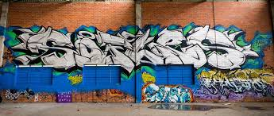 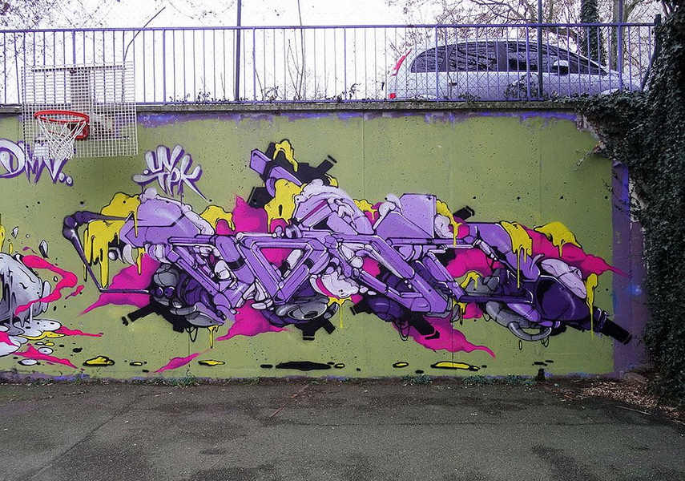 Soffles & Babs 劫持对于最广义的黑客来说也是必不可少的。 人们经常说，黑客就是简单地将某物从其原始功能中转移， 比如破解者研究软件保护以绕过它们，或者病毒编写者 劫持程序以注入代码。 正是因为固有的标准滥用，这些实践经常受到 外界的不满。 有多少滑板会因为首都民兵的到来或者那些认为"长凳 不是用来干这个的"的老顽固而被打断？毕竟，"我们给你们建了滑板场，那才是用来干这个的地方"。 更不用说涂鸦了，它只有在被绅士化、被关进 艺术画廊并出售时才不被视为破坏行为。 在这里，人们再次试图控制它，通过创造新的、更"适应"的规范来扼杀这种规范偏离的精神。 与黑客世界相关的场景，如vx场景或破解场景，当然也名声不佳。 我们多少次听到"程序员创造而破解者破坏"？ 最后，不幸的是对于vx场景来说，人们很少想象有人可以对研究和设计 恶意软件感兴趣而不将它们传播到野外... 此外，破解和计算机病毒经常被认为是"网络破坏行为"... 但是，如果事实上，不是我们为了单纯的乐趣而劫持标准呢？ 如果事实上，不是我们定义了偏差呢？ 社会学家Howard Becker在这个主题上做了大量工作[3]，在他的《局外人》一书中，他发展了这样的观点： 偏差不是来自被标记为偏差的个人，而是来自那些参与执行标准的人。 "社会群体通过制定规范来创造偏差，违反这些规范不一定是他们自己行为的结果。 构成偏差，是通过将这些标准应用于某些个人并将其标记为偏差者。" 这解释了很多事情，例如为什么在路缘[4]上滑板会受到如此不满。 既定标准只是使用这个设施（路缘可以是长凳） 来做某件特定的事（坐在上面）；任何偏离这个规则的行为都会被视为偏差。 因此，滑板手、涂鸦者和黑客并不是为了偏离而偏离，他们只是 以创造性的方式利用一个媒介，以一种最初并非预期的方式。 当然会有反应：城市适应了，我们看到"防滑板"设施在我们的场地上、在他们的长凳上开花； 就像专门针对涂鸦者的警察部队发展一样； 就像反病毒软件公司的成长一样。 这些反制措施并不会让人气馁，恰恰相反。 反动力量和涂鸦实践者之间就此展开了一场猫鼠游戏： 警卫的存在为地铁中的涂鸦会话增添了或多或少的渗透游戏维度； 就像反病毒软件的出现在逻辑上导致了病毒中隐藏方法（如多态性）的出现。 运动只能通过矛盾而存在。 "在所有事物和现象中，它们矛盾方面的相互依存和斗争决定了 它们的生命并推动它们的发展。没有不包含矛盾的事物。没有矛盾，就没有宇宙"，毛泽东说[5]。 这里存在着实践者和那些想要规范或禁止实践的人之间的矛盾；而这个矛盾 使实践发展并适应强加给它的约束。 因此反制措施也会适应自己，从而重新开始这个循环。 这就是事物的辩证运动。 ---\ 组织成群体 \--- 显然，我从本文开始就提到的所有实践的社会方面在它们的构建中都是首要的。 一个"场景"本质上是一个"宏观群体"，主要由许多小群体（无论是正式的还是非正式的）组成。 没有群体，就没有场景。 这些群体可以根据相关实践采取不同的形式。例如，我们会说涂鸦者的"团队"和 破解者或病毒编写者的"组织"。 在滑板手中，群体更加非正式，主要基于亲和力， 特别表现为一群一起滑板的伙伴，不像涂鸦者团队那样给自己取名。 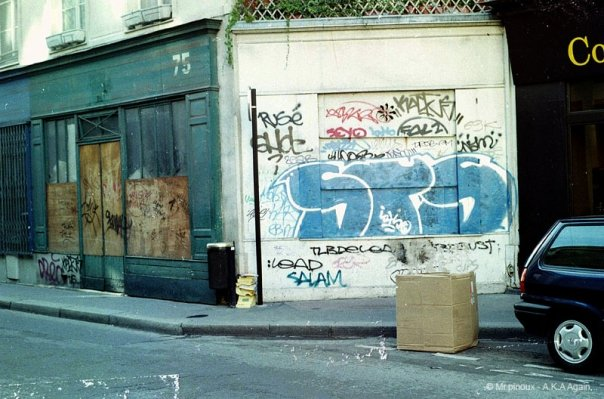 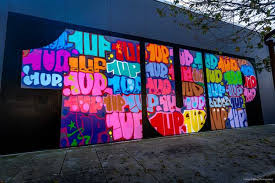 STS团队和1UP团队 那么为什么在其他实践中要组织成群体呢？ 它允许你在其他群体面前确认你的群体在场景中的"官方"存在。 人们可能认为创建这样一个身份的需求直接源于实践的类型。 确实，当滑板本身是一种个人实践时，一些涂鸦者会合作创作大型作品，混合他们的风格。 就像在朋克场景中，乐队是围绕音乐实践形成的。 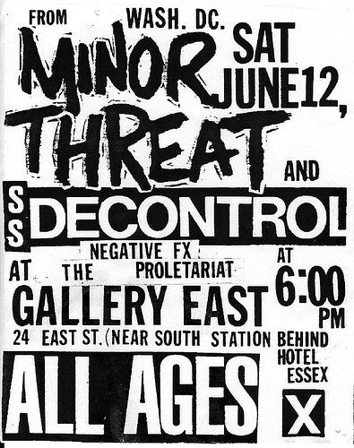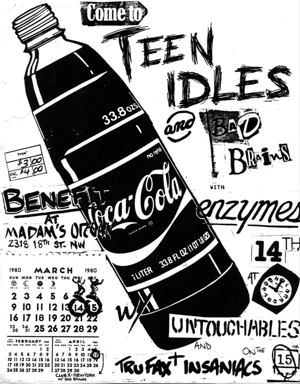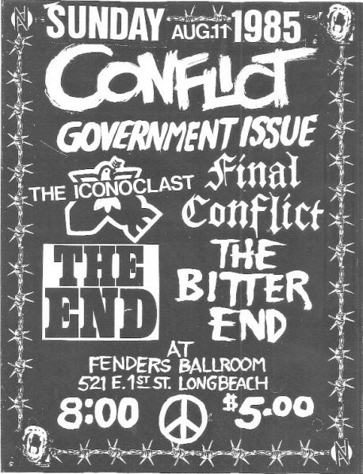 一些朋克音乐会的海报。 很难看到一个人在音乐会上同时演奏鼓、吉他、贝斯并唱歌。 在这里，作为一个群体来确认自己的需求是显而易见的。 当成员决定制作一些不会短暂消失的东西时，滑板手群体可以正式形成， 比如视频。 似乎只要实践产生了某种物质性的东西或某种会持续一段时间的东西[6]，组织成群体就 自然而然地出现了。 当然这不是绝对的规则，因为有些涂鸦者独自工作，就像有些病毒编写者独自 工作并发布他们的研究一样；但在群体中工作通常会产生更重要的东西，并允许更好地 组织生产。 对于破解者来说，这种组织是核心；成员在群体中有不同的角色：有些主要是程序员 （他们编写工具，如脱壳器），其他人主要做逆向工程（他们直接研究 软件保护），最后一些人负责分发"发布版"，即破解的程序。 甚至还有艺术家通过音乐和图形，让不同的群体以另一种方式确认他们的身份， 通过在某些发布版中整合他们的作品（比如在注册机[7]中）。这个子场景甚至发展成了一个 独立的场景，形成了演示场景[8]。 关于破解场景的更多信息，我推荐Xylitol在Rafale[9]中发表的"场景概述"文章。 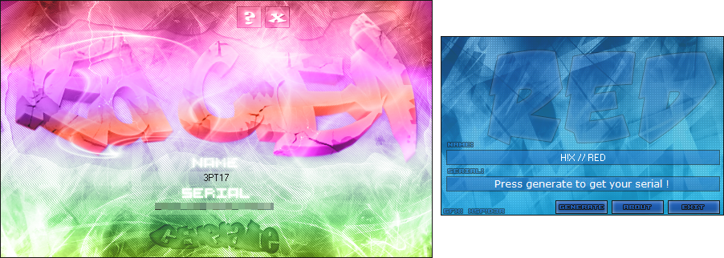 Team RED的注册机 我们可以看到涂鸦和破解场景之间的明显联系。 ---\ 知识的传递 \--- 要让一种文化持续并发展，它当然必须能够以任何方式传递。 这采取各种形式，但几乎从来没有学习者和教师之间的支配关系。 以滑板为例，我们如何学习滑板？当然有"学校"甚至官方滑板教练； 但通常，一个人是通过朋友或与朋友一起被引入滑板场景的。 因此，建立了一种水平关系，我们通过与他人一起滑板、提问、观察来学习，然后 有时通过观看视频（这是我们第一个知识传递媒介的例子）。 我们互相帮助，我们可以在尝试某些动作之前做"预演"来让自己安心，我们同时学习动作 和我们的伙伴，我们在"S.K.A.T.E游戏"[10]中相互对抗。 没有经典的师生关系，更高级的实践者只是建议初学者， 他们自己必须努力工作才能进步。 因此我们在这里看到，向新实践者传递知识是通过口头交流和示范， 通过视频或直接与更有经验的实践者面对面进行的。 就像在滑板中一样，在不同的黑客环境中知识的传递也是水平的 （尽管现在有"网络安全"的大学课程）。 人们主要通过自学、实验、解决挑战、观看会议、参加CTF， 通过与场景中更有经验的成员交谈来学习；当滑板手在街上或滑板场相遇时， 我们黑客在IRC或discord上相遇（有时甚至在"现实"中，在大会上）交流，让场景活跃起来。 然后我们可以自己写文章（从让我们头疼的Write-Up挑战开始）来轮流传递。 当我们有了足够的水平，我们自然会在特定的学科中找到方向 （逆向工程、Web、系统操作、密码学...），这引导我们专注于特定的场景 （比如逆向工程爱好者的破解场景或pwn爱好者的控制台黑客场景） 或者，例如，在更高水平上继续活跃在全球CTF场景中。 通过这种方式，我们形成了群体，我们与之一起学习、创造和分享，最终让我们所在的场景活跃起来， 并顺便推进我们的学科。 无论我们是朋克、滑板手、涂鸦者还是黑客；自己动手和自我组织在我们的实践中占据中心位置， 这也是我们与主流文化区分开来的原因之一。 自己想办法、互相帮助、自学；所有这些都导致了个人或集体的努力，并创造。 不是标准化而是提出新的东西。 这就是我们来到最重要的共同点：杂志。 杂志（"magazine"的缩写）只是一个手工制作的出版物（这里我们再次发现 自己动手的精神）和非专业的，由一群对共同的、通常是晦涩的主题充满热情的人制作， 因此每期产量很少。 自助出版允许更大的创作和语气自由，所以杂志经常非常具有政治性。 如果它们是收费的（这种情况很少），通常价格很低甚至免费。 在物理形式上，它们通常尺寸较小，充满拼贴、绘画和文字。 内容根据（自助）编辑它的群体所关注的中心主题而变化，但通常保持多样性， 因此在诗歌、故事、哲学论文、访谈[11]旁边发现素食食谱并不奇怪， 歌词甚至实用指南；所有这些都被自制的插图包围（而且经常充满爱！）。 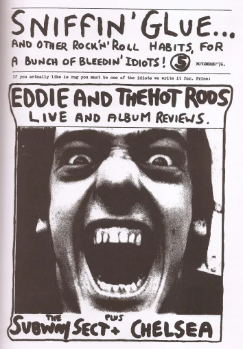 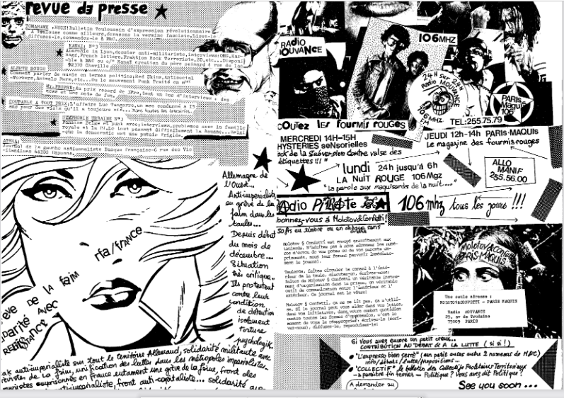 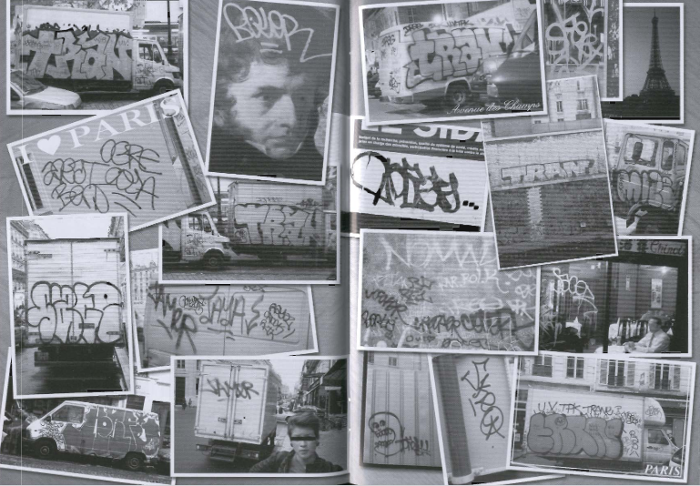 依次为：Sniffin' Glue；Molotov & Confettis；Toys Digest涂鸦杂志。 虽然它们最早出现在1930年代的科幻迷中，但现在几乎在每个"地下"文化中都能找到， 在朋克文化中（在那里它们占据非常重要的位置）以及在虚拟场景中，比如显然的vx场景[12]。 因此，电子杂志不受限于有限的地理空间：潜在的所有对同一主题感兴趣的人都可以在那里。 ---\ 结论 \--- 我们看到了这些不同场景之间的联系，它们都有共同的特点： - 对既定标准的偏离 - 组织成群体 - 通过杂志传递知识 这些联系不是偶然的，它们反映了这些实践的本质：创造性地使用媒介， 以非预期的方式，并在此过程中建立社区。 --- 注释 --- [0] http://phrack.org/ [1] https://pagedout.institute/ [2] 这句话来自一位著名的巴黎涂鸦者 [3] Howard S. Becker, Outsiders: Studies in the Sociology of Deviance [4] 路缘是指人行道和街道之间的边缘 [5] 毛泽东，《矛盾论》 [6] 比如视频、杂志、软件等 [7] 用于生成软件注册码的程序 [8] 一个专注于计算机艺术的场景 [9] 一本法国的黑客杂志 [10] 一种滑板游戏，类似于篮球中的HORSE [11] 就像你现在正在读的这个 [12] 29A、CodeBreakers等都是著名的病毒编写者杂志 |